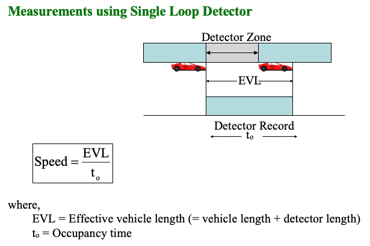

Civil 303
Transport Operations and Pavements
Traffic Studies
Dr Minh Kieu
Department of Civil and Environment Engineering, University of Auckland
These slides:
http://bit.ly/303-traffic-studies

Dr Minh Kieu
Lecturer in Transport Analytics
Department of Civil and Environment Engineering
Office hours: 1 hour after lectures, or via emails
B401, Room 10.08
minh.kieu@auckland.ac.nz
These slides are HTML (like websites): http://bit.ly/303-traffic-studies
A PDF version can be found on Canvas
My principles:
1. Each slide usually has only 1 topic and is always attached to a learning outcome
2. All learning outcomes are going to be assessed
3. Look for the examples and open-ended questions along the way, then the problems at the end of each chapter
Data are becoming ubiquitous
Available data are doubled every 2 years
Data are becoming more important
Traffic Studies
4 Lectures + 1 tutorial
40% of your first test!
Mostly numerical problems, but expect related questions on your final exam, and with knowledge here being used in later chapters
There are quite a bit of concepts in this chapter, but don't panic!

Learning outcomes:
1. Summarise and communicate key concepts regarding data in traffic engineering
2. Apply calculation formulas and analyse traffic variables
3. Understand how to collect those data
What is a 'traffic study'?
A traffic study is the collection and analysis of measurable factual data relating to traffic and its characteristics.
Why do we need to collect data?
Managing the physical systems (e.g. maintain, repair, operate)
Investigating trends over time (e.g. forecast future mobility needs)
Accessing potential impacts (Before & After studies, or Cost-Benefits Analysis)
We'll talk about
What is speed, flow, density and travel time?
How to measure them?
How to estimate them?
What is 'speed': Speed is a vehicle's rate of motion
Spot speed is the instantaneous speed of a vehicle at any specified point.
What speed do you see on your speedometer?
Why measure spot speed?
Speed limit
Vehicle operations
What's about mean speed?
There are two ways to measure mean speed:
Time-mean-speed is calculated from the individual spot speed recorded for vehicles passing a point over a selected time period (arithmetic mean)
\[\begin{aligned} v_t = \frac{\sum_{i=1}^N{v_i}}{N}\\ \end{aligned} \]Space-mean-speed is calculated by dividing the average travel time by the measured distance (harmonic mean)
\[\begin{aligned} v_s = \frac{\Delta x}{\Delta \bar{t}} = \frac{\Delta x}{\frac{1}{N} \sum_{i=1}^N{\frac{\Delta x} {v_i}}} = \frac{N}{\sum_{i=1}^N{\frac{1} {v_i}}} \\ \end{aligned} \]In Traffic Engineering, when we talk about mean speeds, it often means Space-mean-speed
Example 1: If the spot speeds are 50, 40, 30, 20 and 10 km/h, find the time mean speed and space mean speed.
Relationship between time and space mean speed
From Example 1, we can see that Space Mean Speed is quite different to Time Mean Speed
Space mean speed weights slower vehicles more heavily, as they take a longer time to occupy a highway section. As such, $v_s$ is typically lower than $v_t$, in which each vehicle is weighted equally.
\[\begin{aligned} v_t = v_s + \frac{\sigma^2_{s}}{v_s} \\ \end{aligned} \] \[\begin{aligned} v_t \geq v_s \\ \end{aligned} \] \[\begin{aligned} v_s \cong v_t - \frac{\sigma^2_{t}}{v_t} \\ \end{aligned} \]Where $\sigma$ is the variance of speed ($\sigma^2_{s}$ is the variance of space-mean-speed and $\sigma^2_{t}$ is the variance of time-mean-speed)
Speed quartiles
85th Percentile Speed
Sometimes refer to “critical speed”.
Drivers exceeding 85th percentile speed are usually considered to be driving faster than is safe.
Establish “maximum speed limit”.
15th Percentile Speed
Vehicles travelling below this value tend to obstruct the flow of traffic, thereby increasing the accident hazard.
Establish “minimum speed limit”.
How to measure spot speed in practice
How to record $t_0$? When we observe a magnetic signal from the loop detector
Example 2: During a 60-sec period a single-loop detector is occupied by vehicles for the following occupancy time: 0.34, 0.38, 0.40, 0.32, and 0.52 sec. Estimate the values of spot speeds and space mean speed (vs). Assume that the loop detector length = 4 m and that the average length of vehicles = 6 m.
Which vehicle is faster than the speed limit of 110 km/h ?
Hints: Calculate effective vehicle length (EVL) first, then spot speeds and space mean speed
How to measure spot speed in practice

What if we have a lot of spot speeds that are similar?
\[\begin{aligned} v_t = \frac{\sum_{i=1}^N{ f_i v_i}}{N} \\ \end{aligned} \]Where $f$ is the frequency or the number of times the spot speeds are repeated. Similarly for space mean speed
\[\begin{aligned} v_s = \frac{N}{\sum_{i=1}^N{\frac{f_i} {v_i}}} \\ \end{aligned} \]From a traffic video, an observer finds two groups of cars travelling along a road. The observation section is 1 kilometre long. Group A consists of 20 cars in the section running at 10km/h; group B consists of 40 cars running at 20 km/h. Determine the space mean and time mean speeds of the traffic.
What can you conclude about the relationship between space mean speed and time mean speed?
[Answers: $v_t$ = 16.7 km/h, $v_s$ = 15 km/h]
Variance of speed:
Measures how far a set of spot speeds is spread out from their average value.
\[\begin{aligned} \sigma_t^2 = \frac{1}{N-1} \sum_{i=1}^{m}{f_i (v_i - v_t)^2} \\ \end{aligned} \]Similarly for space mean speed
\[\begin{aligned} \sigma_s^2 = \frac{1}{N-1} \sum_{i=1}^{m}{f_i (v_i - v_s)^2} \\ \end{aligned} \]Which data do you think is being collected?
What is 'traffic flow'?

The total number of vehicles passing a given point in a given time. Traffic flow is expressed as vehicles per hour (veh/hr)
\[\begin{aligned} Flow(q) \quad q = \frac{N}{T} \ (veh/hr) \\ \end{aligned} \]Why do you need traffic flow?
Measure of traffic effectiveness: e.g. how many cars can get out of an intersection?
Traffic capacity: e.g. how many lanes we need on the motorway?
What is 'traffic flow': The total number of vehicles passing a given point in a given time. Traffic flow is expressed as vehicles per hour (veh/hr)

Traffic monitoring and traffic data collection
Can support decision making (e.g. tackle traffic congestion or civil emergencies)
Can feed into models of traffic planning.
What are the current techniques and their issues?.
Traffic flows monitoring: With human suveryors
Costly and inefficient.
But quite flexible

Traffic flows monitoring: With road tubes
Imagine doing this on our 5-lanes motorways!
Traffic flows monitoring: With loop detectors
Automatic, and can provide data in real-time once the infrastructure is inplace
Very high cost for maintenance

Traffic flows monitoring: With mobile phone data

Huge volume of detailed data but has privacy concerns or coarse resolution
Traffic flows monitoring: Using computer vision
Efficient and economical
But still quite early so might not be realiable (yet)
Application on the CCTV footage at SH16
Example 4: Test question in 2021
Traffic volume
Traffic volume is basically traffic flow, but often about a longer time period
The total number of vehicles that pass over a given point or section during an extended period (beyond an hour) and is usually in a day
Annual Average Daily Traffic (AADT): is the average number of vehicles per day on a road over the year.
Average Daily Traffic (ADT) refers to the average number of vehicles on a road on a day
Now what's if our traffic is mixed: some cars, some trucks, some motorbikes, etc..
We use passenger car units
e.g. a truck equals 1.5 cars, so 1 truck = 1.5 $pcu$
e.g. a right turn car = 1.5 $pcu$
Peak Hour Factor (PHF)
Compares the traffic volume during the busiest 15-minutes of the peak hour with the total volume during the peak hour. It indicates how consistent traffic volume is during the peak hour.
\[\begin{aligned} PHF = \frac{V}{V_{15m} \times 4} \\ \end{aligned} \]Where:
$V$ = Total hourly volume
$V_{15m}$ = volumne during the peak 15 minutes of the analysis hour
It is commonly known in your area that the heaviest traffic flow rates occur between 5:00 PM and 6:00 PM. Your assignment for the day is to find the peak hour factor (PHF). To do this, you obtain a click-counter and position yourself at the intersection. For each fifteen-minute interval, you record the numbers of right-turns, left-turns, straight-through (ST) trucks, and straight-through passenger cars. Your tabulated values are as shown below.
Note that: a truck is 1.5pcu, a left turn vehicle is 1.5pcu, a right turn vehicle is 2.5pcu
| Time | Right turn | Left turn | ST truck | ST car |
|---|---|---|---|---|
| 5:00-5:15 | 20 | 40 | 25 | 30 |
| 5:15-5:30 | 10 | 20 | 15 | 10 |
| 5:30-5:45 | 50 | 70 | 55 | 50 |
| 5:45-6:00 | 30 | 35 | 20 | 40 |
[Answers: $PHF$=0.57]
What is 'density'?

The average number of vehicles that occupy one mile or one kilometer of road space (veh/km)
\[\begin{aligned} Density(k) \quad k = \frac{N}{L} \ (veh/km) \\ \end{aligned} \]
The average number of vehicles that occupy one mile or one kilometer of road space (veh/km)
Why do we need to measure 'density'?
Direct measure of traffic congestion: denser road is more congested
Traffic control purpose: redirect traffic to roads where we still have space
How do you think density can be measured?
\[\begin{aligned} Density(k) \quad k = \frac{N}{L} \ (veh/km) \\ \end{aligned} \]What if measuring density is too difficult: We use Occupancy instead!
- The proportion of time that a detector is “occupied”, by a vehicle in a defined time period.
\[\begin{aligned} Time Occupancy(O_t) \quad O_t = \frac{\sum_{i}^N{\delta t_i}}{T}\\ \end{aligned} \]Space occupancy $O_s$: percentage length of highway occupied by vehicles
\[\begin{aligned} Space Occupancy(O_s) \quad O_s = \frac{\sum_{i=1}^N{l_i}}{L} \\ \end{aligned} \]Where: $l_i$ is the length of vehicle $i$
$L$ is the total length of the highway section
Example 6: Four vehicles, 6, 7, 8, and 9 m long, are distributed over a length of a freeway lane 200 m long. What is the space occupancy and density?
Time space diagram

Illutrates the spatial-temporal trajectory of each vehicle. Each line represents the trajectory of a vehicle
The horizontal gap (time gap) between two vehicle at the same position shows the time headway $\bar{t}$ between them \[\begin{aligned} Time Headway(\bar{t}) \quad \bar{t} = t_i - t_{i+1} \\ \end{aligned} \]
The vertical gap (space gap) between two vehicle at the same time shows the space headway $\bar{s}$ between them \[\begin{aligned} Space Headway(\bar{s}) \quad \bar{s} = \frac{L}{N} = \frac{1}{k} \\ \end{aligned} \]
Example 7: Use today's concepts to explain the graph
Relationship between Speed, Flow, and Density
Traffic flow theory involves the development of mathematical relationships among the three primary elements of a traffic stream namely flow, density and speed.
Read more:
https://lost-contact.mit.edu/afs/eos.ncsu.edu/info/ce400_info/www2/flow1.html
These relationships help traffic engineers in planning, design and operation to determine:
reasons for traffic congestion
bottlenecks in the transport network
delay experienced by travellers.
changes in performance of road networks due to road improvement measures.
Relationship between Speed, Flow, and Density:
More at the next chapter (Traffic Flow Fundamentals), but generally:
Flow = Density x Space-Mean-Speed
\[\begin{aligned} q = k \times v_s \\ \end{aligned} \]where k is in veh/km and vs is in km/h.
Density is the most important attribute of traffic flow, as it provides an indication of travel demand.
Example 8: Two aerial photographs were taken, 30 seconds apart, to record the positions of 5 vehicles as below. Calculate the density, time-mean-speed, space-mean-speed and flow.
| Vehicle | Position at 0s | Position at 30s |
|---|---|---|
| 1 | 2000 | 2940 |
| 2 | 2100 | 3000 |
| 3 | 1900 | 2600 |
| 4 | 1500 | 2400 |
| 5 | 500 | 1200 |
Travel time and Delay studies
Travel Time: The total time, including stops, moving time and delay, to travel from one point to another
Why should we collect travel time data?
Direct measurement of congestion that everyone understands
Very easy to measure: the time it takes to travel a certain distance
Free-flow travel time and travel delay

Free-flow travel time is the time it should take if we can always travel at the maximum possible speed, usually the speed limit
We often can calculate this by using a certain distance divide by the speed limit
Travel delay: The time difference between the actual travel time and the travel time given no impedances (free-flow travel time).
Delay = Travel time - Free-flow travel time
Travel time data collection: Floating or Probe vehicles

Travel time data collection: License plate matching methods
Travel time
Origins/Destination
Travel time data collection: Video processing
Crowd sourcing method: Google Travel time

How do you think Google can estimate travel time so accurately?
Example 9: Auckland vs other cities in ANZ
Learning outcomes:
1. Summarise and communicate key concepts regarding data in traffic engineering
2. Apply calculation formulas and analyse traffic variables
3. Understand how to collect those data
Problem 2
A loop detector having a length of 3 m was observed to have six vehicles cross over it in a period of 148 sec, for the following durations: 0.44, 0.48, 0.50, 0.41, 0.49, and 0.55s. Estimate the values of $q, k,$ space-mean and time mean speed. The corresponding lengths of vehicles were 6, 7, 6.5, 5, 7.5, and 5.5m.
[Answers: $q$ = 146 veh/h, $v_s$ = 69.2 km/h, $k$ = 2.1 veh/km, $v_t$ = 70 km/h]
Problem 3
At traffic count stations A and B, the ADT are collected in 6 months as the below table. The AADT can be estimated as the average values of these ADT.
Station B also has another modern way to count the vehicles from automatic video processing, which considered more accurate. This value is 8800 veh/day, and is consided as the ground-truth of the vehicle count.
Assume that the ratio between the estimated AADT (using ADT) and the ground-truth value is the same in both stations. Calculate the ground-truth AADT for station A?
[Answers: 4093 veh/day
Collected ADT (veh/day)
| Month | Station A | Station B |
|---|---|---|
| January | 4300 | 9100 |
| February | 4100 | 8700 |
| March | 3900 | 8400 |
| April | 3800 | 8200 |
| May | 3900 | 8500 |
| June | 4000 | 8700 |
Problem 4
Speeds are measured at a fixed point along a road section as follows (in km/h):
52, 47, 50, 54, 59, 63, 67, 57, 55, 48, 44, 53, 54, 58, 49, 61, 55, 50, 47, 55
Determine the following:
a) The time mean speed and variance
b) The space mean speed and variance directly from the measurement data.
c) The space mean speed using the results in (a).
[Answers: a) $v_t$ = 53.9 kph, $\sigma_t^2$ = 34.1, b) $v_s$ = 53.3 km/h, $\sigma_s^2$ = 34.5, c) $v_s$ = 53.3 kph]